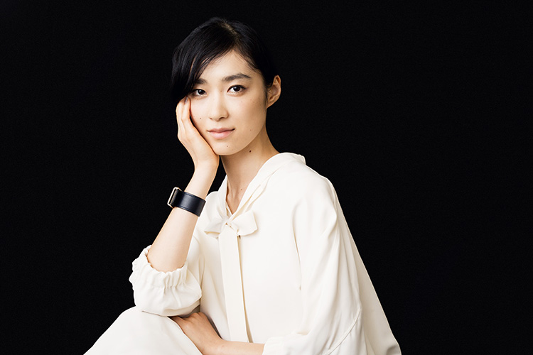
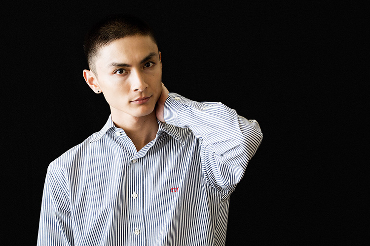
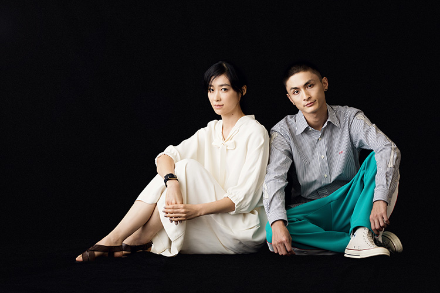

女性映画のバイブル『blue』(2001) 以来となる脚本家・本調有香とのタッグで、角田光代の同名小説を繊細かつ痛切なタッチで活写した安藤尋監督の新作『月と雷』は、家族の本質を問い直すような不思議な味わいのドラマ。風変わりな母子の出現で、結婚目前に人生の軌道を変えていくヒロイン、泰子を演じるのが、初音映莉子。母親（草刈民代）に連れられて、絶えず根無し草的な放浪生活を送る男、智を演じるのが、高良健吾。主演の２人に話を聞いた。
私個人が何に傷ついて何に喜んで生きてきたかというのは、佇まいとして滲み出てくるので、それを求めているのかなって。（初音）
生まれや育ちだけでは推し量れない家族の本質を問われているように感じました。初音さんが演じる泰子、高良さんが演じる智。それぞれどのような家族像を抱いている人物でしょうか？
高良：
家族像が無いんだと思うんです。２人とも普通の家族がどういうものなのかを未だに分かっていない人達なのかな、という気がしますね。
初音：
幼少期の記憶や感情は人生の原点で、子供の頃に傷ついた事やまた嬉しかった事を土台にして人格はつくられていくと思うんです。感受性が豊かな時期に智と直子に出会って、一緒にダラッと過ごしただけかもしれない僅かな時間が泰子にとっては一番の幸せで、その暮らしが恋しいまま成長してきて、だけどその「家族のようなもの」は普通ではないと自分の中で否定して、一般的な日常に馴染もうと生きてきたんですよね、きっと。
普通が分からないから模索し、否定するんですね。泰子も智もどこか達観して大人びているようで、抜け切らない子供らしさも併せ持って見えます。
高良：
幼少の経験というのを引きずりながらもそれを受け入れられなくてもある。それが成長の邪魔になっている部分と、逆に人よりも変に進んでしまっている部分と、きっと混ぜこぜになって表れているんでしょうね。
難しいラインの造形ですが、安藤監督は初音さんに対して「泰子の内面の深さに共鳴してくれる人」と感じていたそうですね。
初音：
安藤監督はシャイな方で、最初にお会いした時はそれが一瞬のことだったこともあって目を見て話して下さらなくて（笑） 後に一緒にお酒を飲む機会に、他愛もない映画トークを繰り広げながら、この作品についての話に発展していったんですけど、俳優としての私ではなく、人間としてどう生きてきたかを見ているように感じました。私個人が何に傷ついて何に喜んで生きてきたかというのは、台詞がなくても佇まいとして滲み出てくるので、それを求めているのかなって。撮影初日に言われて覚えているのが、芝居の手が多いという言葉。文字通り、芝居だったんでしょうね。監督の求める泰子の孤独や寂しさって、表面に見えてしまうものじゃないんです。悲しいシーンでは悲しそうにという演出ではなく、私の身体を通した上で、泰子の弱さをよりリアルに見たかったんだと思います。撮影期間は朝から晩まで泰子として呼吸をして生きていればいいんだって思ってからは、いろいろ考えていたことはもういいや、という感じで、そこに居るようにしました。
高良：
お芝居ではあるんですけど、明らかに自分と違う人を演じているから見抜かれる気がしますよね。監督を前にするとバレる感じがする。僕も準備だけはして、あとは身を任せました。

高良さんは安藤監督とは以前から親交があったそうですが、現場はいかがでしたか？
高良：
安藤監督は部署として見てくるんです。俳優部、照明部、撮影部って。その部署が考えてきたことは正解でしょ、という明快さと厳しさがある。各自に責任を持たせるというか。
初音：
すごく分かる。信頼がある。撮影していても最初のカットをOKにすることが多い。何回もやって絞り出すんじゃなくて、役者が現場に持ってきたものを尊重して撮る方なんです。それでいて、疑問に思ったことを質問すると、１が200くらいになって返ってくる（笑） ガッと受け止めてくれる方でもあるんです。
これは直子を巡る物語でもあると思いますが、イメージを覆すような配役で、草刈民代さんが強烈な存在感のある直子を演じられます。
高良：
草刈さんは格好良かったですよね。
初音：
格好良かった。上品なキャラクターのイメージがあったので、その草刈さんを想像してお会いした時に、「ハッ、直子がいる！」って思ったほど、直子という役をきっと大事にされていて。実際はこんなに話す方なんだって驚いたくらいにオープンな方なんですよ。海辺のシーンの撮影の合間に、私は亜里砂役の藤井武美ちゃんといたんですけど、高良君と草刈さんがピタッとくっ付いて１時間くらいずっとお喋りしてて、スタッフ、キャストの皆で本当に親子だって言いながら眺めていました。
空気感は作品からも伝わってきました。智と直子は親子ですが、不思議な関係性ですよね。
高良：
智は直子が大好きだと思うんです。だけど恨んでもいて、それを乗り越えた上での関係性というか、最初から受け入れられる智ではなかったと思うんです。母親である直子の送ってきた普通じゃない人生に対して持っていた疑問をどこかのタイミングで受け入れて、それでも大好きなんです。
血の繋がりはない直子と泰子の再会のざわめきは、泰子の実の母親との再会と対比されます。泰子にとっての直子はどんな存在なんでしょうか？
初音：
原作を読んだ時に、泰子は何故、しがみつくかのように直子に執着しているんだろうって考えて、それはたぶん実の母親よりも直子が愛情を注いでくれたからで、原作にも描かれていない直子を恋しいと思う泰子の気持ちがあったと思うんです。直子と再会後に、「何で出て行ったの？お父さんのことを好きだったの？」って問う場面があるけど、本当に知りたかったのは、「私のことを好きだったの？」ってことだと思うんです。それをうまく伝えられない。素直になれない大人達がぶつかり合っているのが面白いなって。

認められなかったものを受け入れた瞬間に何かが始まる。例えネガティヴなことでもそれによって何かが変わるはずなんです。（高良）
再会した泰子と智は、根拠なく引き寄せられます。
高良：
一緒にいた時間っていうのは実際少ないはずなんです。でも初音さんも言った通り、会いたいと思っていた気持ちだと思うんです。その人について考えた時間の濃さですよね。智にとってはそれが泰子だったから会いに行ったわけで、そこは理解できるので、あまり考えずにすんなりできました。
初音：
泰子は婚約をしているけど、相手のことを本当に愛していて婚約していたわけではないと思うんですね。私のこと好きそうだからいいかっていう感覚でいたところに、違うよってまるで忠告しに来たみたいに智が登場して、最初は戸惑うけど、ほろ酔いと共に違和感なく時間を縮めていく。子供の頃のように背中をさすってもらおうとしたり、やっぱりあの頃に焦がれている。肉体関係の描写もありますけど、子供同士が戯れ合っている延長のような感覚なんだと思います。
高良：
そうだ。泰子は婚約してたんですよね。すっかり忘れてました（笑）
初音：
（笑）
結果、智によって泰子は浄化されたと思いますか？
高良：
掻き回しましたけどね（笑）
初音：
ね、掻き回したね（笑）
高良：
掻き回した可能性もあるので、浄化なのかは分からないけど、先には進めましたよね。この映画で描かれるのは、今まで自分が認められなかったものを受け入れた瞬間に何かが始まるということだと思っていて、これはこの映画の結末にも言えることで、例えネガティヴなことだとしてもそれによって何かが変わるはずなんです。
２人に或る現実が訪れ、箪笥の洋服や鞄の中身を燃やす場面は印象的です。
初音：
次に行くためのステップのような感じなのかな。原作にはない描写なんですけど、脚本の本調さんがお父さんの箪笥をイメージして、箪笥にはスーツから下着まで生活が詰まっていて、直子の鞄もまた歩んできた日々が詰まっている。すべてが入っているものを燃やすというのは、泰子と智らしいなって、腑に落ちる感じがしました。こうやって２人はまた成長していくんだって。

脚本の本調有香さんの名前が出ましたが、安藤監督と本調さんのタッグは、『blue』(2003)以来になりますね。
高良：
今回の撮影も同じく鈴木一博さんですしね。安藤監督の作品は元々好きなんですけど、それは作品の中の時間の流れだったり、登場人物の切り取り方。視点が優しいんです。『blue』は昔観て、本当に好きな映画で、主演の市川実日子さん、小西真奈美さんのお２人が素敵ですね。
初音：
監督の本調さんへの敬意みたいなものは撮影の前から伝わってきました。監督は女性の目線にきちんと立って、寄り添うように作品をつくられる方なんだと思います。あと高良君の言う通り、監督の映画からは時の流れを感じられるんです。時の流れの中で人々が出会って別れて、再会して、また去っていく。そういった移ろいが描かれるので。
最後に。２人が求めた「普通」とはどういうものなんだと思いますか？
初音：
傍目には奇妙な人達と思われるかもしれないですけど、それぞれに生きにくさを感じながらも、そうやってしか生きられない。それは泰子と智だけじゃなく、すべての登場人物に当てはまることだと思います。「普通」って何だろう…。私個人も大多数の言う「普通」に対して「え！？」と思ってしまうタイプで。多数決で「普通」が判断されてしまうことには違和感を覚えるんです。
高良：
人それぞれ「普通」は違うと思うので、泰子も智も自分が「普通」ということを認めてあげたということです。「普通」って…、難しいですよね。